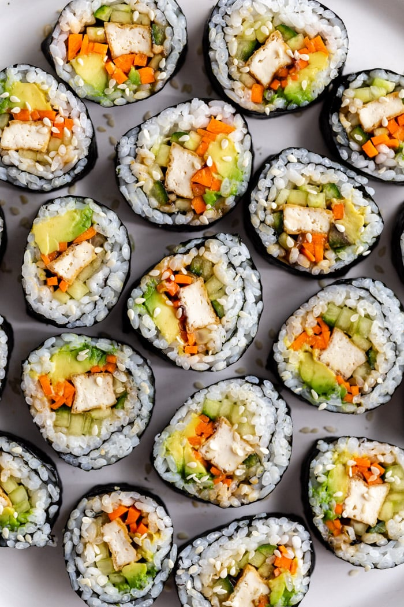

Vegan Sushi

Description
Keep the fishies in the ocean with the best ever vegan sushi.
Ingredients
- Short-Grain Sushi Rice
- Water
- Salt
- Oil
- Rice Vinegar
- Sugar
- Extra Firm Tofu
- Onion
- Garlic
- Vegan Mayonnaise
- Sriracha
- Nori
- Avocado
- Matchstick Carrots
- Cucumber
Steps
- Combine rice, water, and a pinch of salt in a saucepan; bring to a boil. Stir once with a bamboo rice spatula or a thin wooden spoon. Reduce the heat to low, cover, and cook until all water is absorbed and rice is tender, about 20 minutes. Let cool.
- Heat vegetable oil in a small saucepan over medium heat; add rice vinegar, sugar, and 1/8 teaspoon salt. Heat mixture until all sugar has dissolved and liquid begins to simmer. Remove from the heat and let cool until safe to handle, at least 10 minutes. Fold small portions of the cooled liquid slowly into the cooled rice until mixture is slightly wet and sticky but not gooey; you may not need all of the liquid.
- Press excess liquid out of the tofu using a paper towel. Cut tofu into strips.
- Heat olive oil in a small skillet over medium heat. Add tofu strips, onion, and garlic; cook and stir until tofu is golden brown, about 4 minutes per side.
- Mix vegan mayonnaise and Sriracha together in a small bowl.
- Lay a sheet of nori, rough-side up, on a sushi mat. With wet fingers, firmly pat a thick, even layer of prepared rice over the nori, covering it completely. Arrange tofu strips, avocado, cabbage, carrots, and cucumber in a line along the bottom edge of the sheet.
- Roll nori and sushi mat over the filling. Remove the mat and wrap the roll with plastic wrap, twisting ends tightly to compress the roll. Refrigerate until set, 5 to 10 minutes. Repeat with remaining nori and filling.
- Remove sushi roll from the plastic wrap, slice into pieces, and top with the Sriracha mayonnaise.